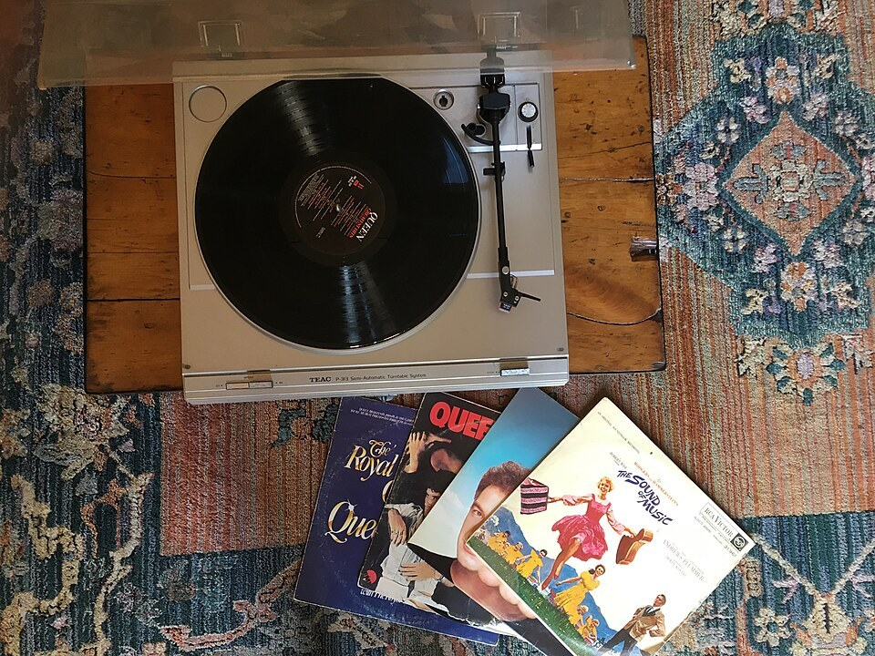

Welcome
Welcome to my website! Vintage things are old things that people still love to use, wear and collect. Think of old records, cameras and typewriters. In this website you will find out why so many of us fall in love with them.
The past is a foreign country; they do things differently there.
— L. P. Hartley, The Go-Between (1953)
Why do people love vintage?
- Old things were often made well and built to last.
- They remind us of music, films and family stories.
- Every item has its own history.
- Using old things again is good for the planet.

Click the picture to read about records →